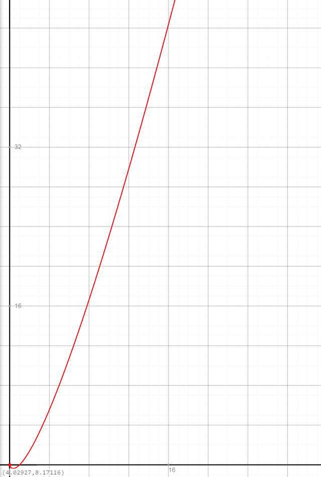

What is Heap sort?
Heap sort is a sorting algorithm that works by arranging the data into a heap data structure prior to sorting.What is a heap?
A heap is a type of data structure, it works by storing the largest value at the top in what's called a 'node'. Each complete node has 2 child nodes, these contain values smaller than the parent node. The value of a child node will never be larger than the value of of the parent node.
How does Heap sort work?
Heap sort first takes the root value of the heap (the top value) and puts it in the resultant array. The heap is then reconstructed and the new root element is then put in the second slot in the array. This continues until the heap runs out of items, returning a sorted array. Heap sort has a worst-case efficiency of O(n log n) (n being the number of elements), this means as the number of elements increases the speed increases. Here is the graph of the worst-case efficiency, as the number of elements increases.

How do you construct a heap?
A heap is not stored as a tree, it is stored in an array. For example, if you consider the n-th element from an array, the- left child is located on the position n*2
- right child is located on the position n*2 + 1
- parent is located at ⌊n/2⌋ (n/2, rounded down, the ⌊ and ⌋ means 'floor function')
- heapify - This creates the heap
- insert - Inserts a value into the heap
- delete - Deletes an item from the heap
- extract-min - Extracts the minimum value, and removes it
- extract-max - Extracts the maximum value, and removes it
var heapSort = (function () {
function heapify(array, index, heapSize) {
var left = 2 * index + 1,
right = 2 * index + 2,
largest = index;
if (left < heapSize && array[left] > array[index])
largest = left;
if (right < heapSize && array[right] > array[largest])
largest = right;
if (largest !== index) {
var temp = array[index];
array[index] = array[largest];
array[largest] = temp;
heapify(array, largest, heapSize);
}
}
function buildMaxHeap(array) {
for (var i = Math.floor(array.length / 2); i >= 0; i -= 1) {
heapify(array, i, array.length);
}
return array;
}
return function (array) {
var size = array.length,
temp;
buildMaxHeap(array);
for (var i = array.length - 1; i > 0; i -= 1) {
temp = array[0];
array[0] = array[i];
array[i] = temp;
size -= 1;
heapify(array, 0, size);
}
return array;
};
}());